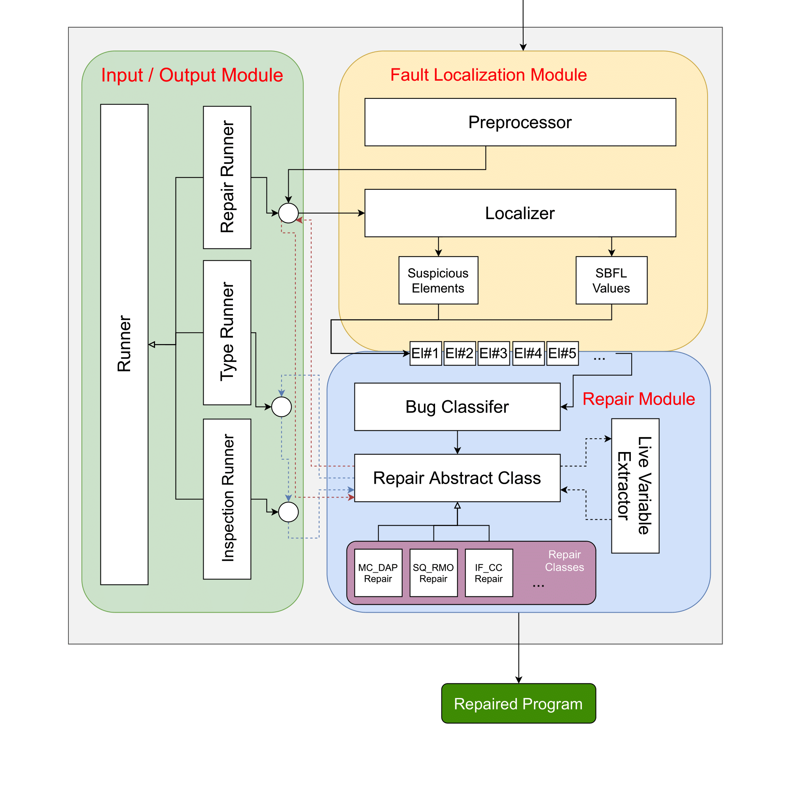

I'm an AWS certified solutions architect and full-stack developer. I'm currently working full-time as a Software Engineer at Huawei Canada. You can find my contact info on the left tab bar.


A wise man once said, "Modern literacy means that you know how to code in Javascript".
Not considering whether I was that wise man or not, I love Javascript and everything about it. I have more than 4 years of experience as a Full-Stack Javascript developer. MERN stack is my primary choice for development, though I'm willing to compromise on the M and E parts.
I've acquired knowledge in almost all the sections of a business' software stack. Whether it's infrastructure design, determining the most efficient cloud solution, DevOps and organizational operations, spinning up web servers and implementing business logic in the back-end, front-end development and client-side application design, count me in.
This broad knowledge makes me a versatile team player. I'd characterize myself as a big team player as well as a team leader. I've had the chance to lead small to medium-sized teams, and test out different team management schemes. I truly believe that "Teamwork makes the dream work". Teamwork should not be overlooked. Choosing the correct team management scheme can enormously save everyone's time and help the business grow more efficiently.
In my spare time, I usually play instruments. I've long been a multi-instrumentalist. People who know me closely usually get sick of my relative pitch references, but eh, can't help it. Have a look at me playing a delightful groove!
I was very fortunate to be accepted into a two-year master's program at the University of Waterloo as it is one of the top 25 universities for Computer Engineering in the whole world. My research is under the supervision of Dr. Patrick Lam and on the subject of Computer Software.
I finished my grad studies by May 2023, and soon after I joined Huawei Canada Research Center's PaaS team at Markham Ontario, working on the next generation serverless platform service.
Credit to the designers of this webpage's 3D objects:
-
WasmWalker: Path-based Code Representations for Improved WebAssembly Program Analysis
Winter 2023 - ICSE2024 Paper | Master's thesis
University of Waterloo
Abstract— WebAssembly, or Wasm, is a low-level binary language that enables execution of near-native-performance code in web browsers. Wasm has proven to be useful in applications including gaming, audio and video processing, and cloud computing, providing a high-performance, low-overhead alternative to JavaScript in web development. The fast and widespread adoption of WebAssembly by all major browsers has created an opportunity for analysis tools that support this new technology. In this study, we performed an empirical analysis on the root-to-leaf paths of the abstract syntax trees in the WebAssembly Text format of a large dataset of WebAssembly binary files compiled from source packages in the Ubuntu 18.04 repositories. After refining the collected paths, we discovered that only 3,352 unique paths appeared across all of these binary files. With this insight, we propose two novel code representations for WebAssembly binaries. These novel representations serve not only to generate fixed-size code embeddings but also to supply additional information to sequence-to-sequence models. Ultimately, our approach seeks to help program analysis models uncover new properties from Wasm binaries, expanding our understanding of their potential. We evaluated our new code representation on two applications: (i) method name prediction and (ii) recovering precise return types. Our results demonstrate the superiority of our novel technique over previous methods. More specifically, our new method resulted in 5.36% (11.31%) improvement in Top-1 (Top-5) accuracy in method name prediction and 8.02% (7.92%) improvement in recovering precise return types, compared to the previous state-of-the-art technique, SnowWhite.
-
Ruxanne: A Study of Common Bug Fix Patterns in Rust
Fall 2022 - EMSE Paper
University of Waterloo
Abstract— Rust is a relatively new programming language which allows programmers to write programs that have low-level control over resources while still ensuring high-level safety guarantees (for programs written in safe Rust). Rust's ownership framework enables programs to meet these two seemingly-contradictory goals. The Rust compiler's Borrow-Checker component enforces the ownership framework requirements that ensure Rust's safety guarantees. Rust is popular: as of 2022, it has ranked first, for the seventh consecutive year, in Stack Overflow's annual Developer Survey as the most-loved programming language. The number of Rust developers is growing as the need for faster and safer software increases. Yet, to the best of our knowledge, no research has sought to identify the most pervasive bug fix patterns within Rust programs. In this project, we introduce Ruxanne, a tool for analyzing and extracting fix patterns in Rust. Ruxanne implements a novel embedding of Rust code into fixed-sized vectors. Using Ruxanne, we mined the top 18 most-starred Rust projects in Github to discover the most common bug fix patterns committed to their repositories. We analyzed 87,726 code changes drawn from 57,214 commits across these 18 projects. After clustering the code changes, and conducting a manual analysis, we discovered 20 groups of cross-project bug fix patterns, which we categorize as (1) general patterns and (2) borrow-checker-related patterns. We describe each of these patterns and their implications to automated program repair.
-
Synthesizing Boolean Expressions Based On Several Constraints Using Counterexample Guided Inductive Synthesis Concepts
Fall 2021 - ECE750T28 Project
University of Waterloo (read the paper?)
Abstract— A Program Synthesis tool automates the writing of computer programs based on a set of specifications and constraints provided to the tool. In this paper, we outline the development of a Boolean expression synthesis tool based upon the JS-Buxter tool developed by author Mohammad Robati Shirzad. This automated program repair tool was developed for resolving JavaScript bugs. It included support for the IF-CC bug fix pattern, which focused on bugs related to if-condition statements. The JS-Buxter tool used a “Brute-Force” approach, but it was clear that there could be a way to resolve such bugs more efficiently. Since if-condition statements are activated based on a Boolean result of some given variable(s), a Boolean expression synthesis tool would be helpful in improving performance for the IF-CC bug fix pattern. This project is focused on our development of such a Boolean expression synthesis tool. We provide background information for the software and theoretical concepts we used in development of our Boolean Expression Synthesis tool. These concepts are (in part) based upon the Counterexample Guided Inductive Synthesis (CEGIS) approach. We developed two approaches for program synthesis: “Feedback Only”, and “Feedback + Initial Probing”. We sought to establish that these approaches achieved Boolean program synthesis much faster than a “Brute-Force” Approach. All three approaches would take a set of variables and a set of constraints as input. We collected data for all three approaches, for different levels of expression depth. We analyzed the results of this data, and determined that these feedback-based approaches achieved Boolean expression synthesis significantly faster (more than 10 times faster for large inputs) than the “Brute-Force” approach.
-
JS-Buxter: A program repair framework for Javascript
Spring 2021 - Undergraduate Honor Thesis
Amirkabir University of Technology(use the tool?)
In this project we have developed a tool written in Python which gets a buggy Javascript file with a set of tests as an input, and as the output it gives out the repaired program that can pass all the tests.

Teaching Experience:
I love teaching!
Fortunately, I had the chance of TAing many courses both during my graduate and undergraduate studies, here are some of the courses I've TAed:
- TA - UW - W23 - ECE459: Programming for Performance
- TA - UW - F22 - ECE252: System Programming and Concurrency
- TA - UW - S22 - ECE252: System Programming and Concurrency
- TA - UW - W22 - ECE459: Programming for Performance
- TA - AUT - W20 - Computational Intelligence
- Instructor - AUT - S19 - Web Design Fundamentals
Work Experience:
Software Engineer @ Huawei Canada
Working closely with the research and development team to deliver our high quality, secure WASM based Cloud Services product. Also, trying to expand the capabilities of the product with new functionality and create a robust WASM based serverless platform with the latest technologies.